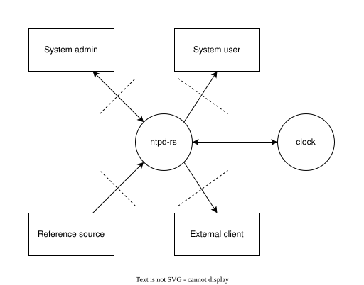

Threat model
This document a threat model, based on the methodology presented by Eleanor Saitta, that we as developers use as a guide in our development process. It may not contain all the context needed to fully understand it, if clarifications are needed please ask us.
The used methodology is entirely manual, but is derived from Trike.
Actors, Assets & Actions
Actors
We model the following actors:
- System Admin: Administrator of the system running ntpd-rs
- System User: Non-administrator user of the system running ntpd-rs
- Reference Source: A remote time server we use as a source for our time.
- External Client: A remote user that is allowed to use this instance of ntpd-rs to receive time.
- Anonymous: Any other party
Assets
We model the following assets:
- Clock: The system clock
- Source configuration: The configuration on which sources to use, including some metadata on the current status of those sources
- Server configuration: The configuration on which interfaces to provide an NTP server on, and who can use those, including some metadata on the current server status.
- Request nonce: The random nonce a client uses for a specific request to the server to match the response to the request.
- Client NTS keys: The keys a client uses to communicate with a server.
- Client NTS cookies: The cookies a client uses to communicate with the server.
- Server NTS keys: The keys a server uses to communicate with a client (ephemeral).
- Server NTS cookies: The cookies a server is about to send to a client (ephemeral).
- NTS Cookie keys: The keys a server uses to encrypt cookies.
Actions
| Clock | Source Configuration | Server Configuration | Request Nonce | Client NTS Keys | Client NTS Cookies | Server NTS Keys | Server NTS Cookies | NTS Cookie keys | ||||||||||
|---|---|---|---|---|---|---|---|---|---|---|---|---|---|---|---|---|---|---|
| System admin | Create - N/A | Read - Always | Create - Always | Read - Always | Create - Always | Read - Always | Create - N/A | Read - Always | Create - N/A | Read - Always | Create - N/A | Read - Always | Create - N/A | Read - Always | Create - Always | Read - Always | Create - Always | Read - Always |
| Update - Always | Delete - N/A | Update - Always | Delete - N/A | Update - Always | Delete - N/A | Update - N/A | Delete - N/A | Update - N/A | Delete - N/A | Update - N/A | Delete - N/A | Update - N/A | Delete - N/A | Update - N/A | Delete - N/A | Update - Always | Delete - Always | |
| System user | Create - N/A | Read - Always | Create - Never | Read - Sometimes | Create - Never | Read - Sometimes | Create - N/A | Read - Sometimes | Create - N/A | Read - Sometimes | Create - N/A | Read - Sometimes | Create - N/A | Read - Sometimes | Create - Sometimes | Read - Sometimes | Create - Sometimes | Read - Sometimes |
| Update - Never | Delete - N/A | Update - Never | Delete - N/A | Update - Never | Delete - N/A | Update - N/A | Delete - N/A | Update - N/A | Delete - N/A | Update - N/A | Delete - N/A | Update - N/A | Delete - N/A | Update - N/A | Delete - N/A | Update - Sometimes | Delete - Sometimes | |
| Reference source | Create - N/A | Read - Never | Create - Never | Read - Never | Create - Never | Read - Never | Create - N/A | Read - Sometimes | Create - N/A | Read - Sometimes | Create - N/A | Read - Sometimes | Create - N/A | Read - Never | Create - Never | Read - Never | Create - Never | Read - Never |
| Update - Sometimes | Delete - N/A | Update - Never | Delete - N/A | Update - Never | Delete - N/A | Update - N/A | Delete - N/A | Update - N/A | Delete - N/A | Update - N/A | Delete - N/A | Update - N/A | Delete - N/A | Update - N/A | Delete - N/A | Update - Never | Delete - Never | |
| External client | Create - N/A | Read - Always | Create - Never | Read - Always | Create - Never | Read - Never | Create - N/A | Read - Never | Create - N/A | Read - Never | Create - N/A | Read - Never | Create - N/A | Read - Sometimes | Create - Sometimes | Read - Sometimes | Create - Never | Read - Never |
| Update - Never | Delete - N/A | Update - Never | Delete - N/A | Update - Never | Delete - N/A | Update - N/A | Delete - N/A | Update - N/A | Delete - N/A | Update - N/A | Delete - N/A | Update - N/A | Delete - N/A | Update - N/A | Delete - N/A | Update - Never | Delete - Never | |
| Anonymous | Create - N/A | Read - Never | Create - Never | Read - Never | Create - Never | Read - Never | Create - N/A | Read - Never | Create - N/A | Read - Never | Create - N/A | Read - Never | Create - N/A | Read - Never | Create - Never | Read - Never | Create - Never | Read - Never |
| Update - Never | Delete - N/A | Update - Never | Delete - N/A | Update - Never | Delete - N/A | Update - N/A | Delete - N/A | Update - N/A | Delete - N/A | Update - N/A | Delete - N/A | Update - N/A | Delete - N/A | Update - N/A | Delete - N/A | Update - Never | Delete - Never | |
- Reference sources may update the Clock only when sufficiently many agree and don't exceed configured adjustment limits.
- Reference sources may only know request information related to requests to them.
- System users may read configuration (both types) only when allowed by system admin.
- External clients may know key material and cookies related to their session.
Failure cases
| Escalation of Privilege | Denial of Service | |||
|---|---|---|---|---|
| Clock | Create - NA | Read - Low | Create - NA | Read - Medium |
| Update - Critical | Delete - N/A | Update - Medium | Delete - N/A | |
| Source configuration | Create - Critical | Read - Medium | Create - N/A | Read - Low |
| Update - Critical | Delete - N/A | Update - Low | Delete - N/A | |
| Server configuration | Create - Medium | Read - Low | Create - N/A | Read - Low |
| Update - Medium | Delete - N/A | Update - Low | Delete - N/A | |
| Request nonce | Create - N/A | Read - Low | Create - N/A | Read - N/A |
| Update - N/A | Delete - N/A | Update - N/A | Delete - N/A | |
| Client NTS keys | Create - N/A | Read - Critical | Create - N/A | Read - N/A |
| Update - N/A | Delete - N/A | Update - N/A | Delete - N/A | |
| Client NTS cookies | Create - N/A | Read - Low | Create - N/A | Read - N/A |
| Update - N/A | Delete - N/A | Update - N/A | Delete - N/A | |
| Server NTS keys | Create - N/A | Read - Critical | Create - N/A | Read - N/A |
| Update - N/A | Delete - N/A | Update - N/A | Delete - N/A | |
| Server NTS cookies | Create - N/A | Read - Low | Create - N/A | Read - N/A |
| Update - N/A | Delete - N/A | Update - N/A | Delete - N/A | |
| NTS Cookie keys | Create - Critical | Read - Critical | Create - N/A | Read - N/A |
| Update - Critical | Delete - Medium | Update - N/A | Delete - N/A | |
- Request nonce: The random nonce a client uses for a specific request to the server to match the response to the request.
- Client NTS keys: The keys a client uses to communicate with a server.
- Client NTS cookies: The cookies a client uses to communicate with the server.
- Server NTS keys: The keys a server uses to communicate with a client (ephemeral).
- Server NTS cookies: The cookies a server is about to send to a client (ephemeral).
- NTS Cookie keys: The keys a server uses to encrypt cookies.
Security strategy
- If any actor tries to read the clock, the system will not respond with a valid time if the IP address is not on the configured allowlist
- If any actor tries to update the clock, the system tries to verify consensus among multiple reference sources
- If any actor tries to update the clock, the system refuses updates beyond a configured limit
- If the configuration file (used to create the configuration) is world-writable, the system will emit a warning
- If the configuration socket (used to update the configuration) is world-writable, the system will emit a warning
- The observability socket (used to read the configuration/status) is a Unix socket, which is unreachable over the network by default
- If any actor tries to read the clock too often, the system will stop responding a valid time to them
- If the NTS cookie key storage file is world-readable, the system will emit a
warning. The system will never create this file with permissions other than
0600.
Data flow diagram

- The security boundaries between the admin and system users and ntpd-rs run through the Unix sockets used for communication.
- The security boundaries for reference sources and external clients run through the network sockets used for communication.